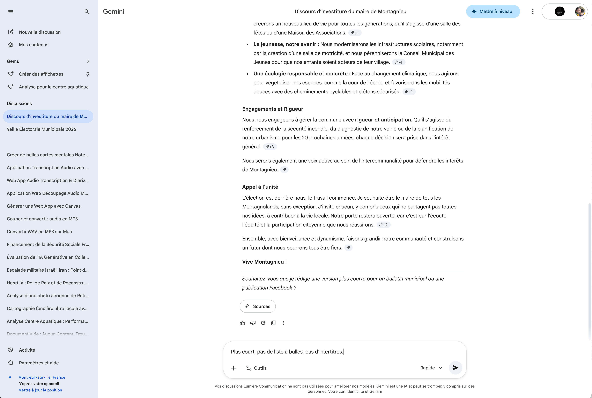

Exploiter les réponses de Gemini
Après chaque réponse, Gemini vous offre plusieurs possibilités : des suggestions pertinentes pour aller plus loin, un accès aux sources qui ont alimenté la réponse, et des actions rapides pour évaluer, copier ou partager le résultat. Découvrez comment tirer le meilleur parti de chaque échange.
Cliquez sur les pastilles orange pour découvrir chaque fonctionnalité

Cliquez sur une pastille pour en savoir plus